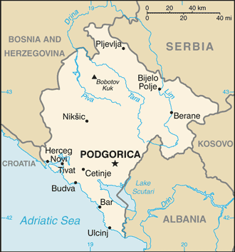
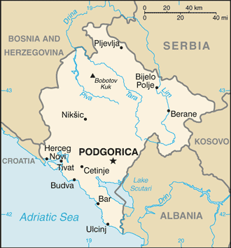

Europe :: MONTENEGRO
Introduction :: MONTENEGRO
-
The use of the name Crna Gora or Black Mountain (Montenegro) began in the 13th century in reference to a highland region in the Serbian province of Zeta. The later medieval state of Zeta maintained its existence until 1496 when Montenegro finally fell under Ottoman rule. Over subsequent centuries, Montenegro managed to maintain a level of autonomy within the Ottoman Empire. From the 16th to 19th centuries, Montenegro was a theocracy ruled by a series of bishop princes; in 1852, it transformed into a secular principality. Montenegro was recognized as an independent sovereign principality at the Congress of Berlin in 1878. After World War I, during which Montenegro fought on the side of the Allies, Montenegro was absorbed by the Kingdom of Serbs, Croats, and Slovenes, which became the Kingdom of Yugoslavia in 1929; at the conclusion of World War II, it became a constituent republic of the Socialist Federal Republic of Yugoslavia. When the latter dissolved in 1992, Montenegro federated with Serbia, creating the Federal Republic of Yugoslavia and, after 2003, shifting to a looser State Union of Serbia and Montenegro. In May 2006, Montenegro invoked its right under the Constitutional Charter of Serbia and Montenegro to hold a referendum on independence from the state union. The vote for severing ties with Serbia barely exceeded 55% - the threshold set by the EU - allowing Montenegro to formally restore its independence on 3 June 2006.
Geography :: MONTENEGRO
-
Southeastern Europe, between the Adriatic Sea and Serbia42 30 N, 19 18 EEuropetotal: 13,812 sq kmland: 13,452 sq kmwater: 360 sq kmcountry comparison to the world: 162slightly smaller than Connecticuttotal: 680 kmborder countries (5): Albania 186 km, Bosnia and Herzegovina 242 km, Croatia 19 km, Kosovo 76 km, Serbia 157 km293.5 kmterritorial sea: 12 nmcontinental shelf: defined by treatyMediterranean climate, hot dry summers and autumns and relatively cold winters with heavy snowfalls inlandhighly indented coastline with narrow coastal plain backed by rugged high limestone mountains and plateausmean elevation: 1,086 melevation extremes: lowest point: Adriatic Sea 0 mhighest point: Bobotov Kuk 2,522 mbauxite, hydroelectricityagricultural land: 38.2%arable land 12.9%; permanent crops 1.2%; permanent pasture 24.1%forest: 40.4%other: 21.4% (2011 est.)24 sq km (2012)highest population density is concentrated in the south, southwest; the extreme eastern border is the least populated areadestructive earthquakespollution of coastal waters from sewage outlets, especially in tourist-related areas such as Kotorparty to: Air Pollution, Biodiversity, Climate Change, Climate Change-Kyoto Protocol, Desertification, Hazardous Wastes, Law of the Sea, Marine Dumping, Marine Life Conservation, Ozone Layer Protection, Ship Pollutionsigned, but not ratified: none of the selected agreementsstrategic location along the Adriatic coast
People and Society :: MONTENEGRO
-
642,550 (July 2017 est.)country comparison to the world: 168noun: Montenegrin(s)adjective: MontenegrinMontenegrin 45%, Serbian 28.7%, Bosniak 8.7%, Albanian 4.9%, Muslim 3.3%, Romani 1%, Croat 1%, other 2.6%, unspecified 4.9% (2011 est.)Serbian 42.9%, Montenegrin (official) 37%, Bosnian 5.3%, Albanian 5.3%, Serbo-Croat 2%, other 3.5%, unspecified 4% (2011 est.)Orthodox 72.1%, Muslim 19.1%, Catholic 3.4%, atheist 1.2%, other 1.5%, unspecified 2.6% (2011 est.)0-14 years: 15.1% (male 47,937/female 49,102)15-24 years: 9.58% (male 27,510/female 34,053)25-54 years: 46.59% (male 161,842/female 137,549)55-64 years: 13.58% (male 43,561/female 43,686)65 years and over: 15.14% (male 39,164/female 58,146) (2017 est.)total dependency ratio: 47.8youth dependency ratio: 27.3elderly dependency ratio: 20.5potential support ratio: 4.9 (2015 est.)total: 40.7 yearsmale: 39.9 yearsfemale: 41.8 years (2017 est.)country comparison to the world: 48-0.28% (2017 est.)country comparison to the world: 21710 births/1,000 population (2017 est.)country comparison to the world: 1949.7 deaths/1,000 population (2017 est.)country comparison to the world: 47highest population density is concentrated in the south, southwest; the extreme eastern border is the least populated areaurban population: 64.4% of total population (2017)rate of urbanization: 0.25% annual rate of change (2015-20 est.)PODGORICA (capital) 165,000 (2014)at birth: 1.06 male(s)/female0-14 years: 0.97 male(s)/female15-24 years: 0.83 male(s)/female25-54 years: 1.17 male(s)/female55-64 years: 1 male(s)/female65 years and over: 0.66 male(s)/femaletotal population: 0.99 male(s)/female (2016 est.)26.3 years (2010 est.)7 deaths/100,000 live births (2015 est.)country comparison to the world: 16323.3% (2013)6.4% of GDP (2014)country comparison to the world: 962.34 physicians/1,000 population (2015)4 beds/1,000 population (2011)improved:urban: 100% of populationrural: 99.2% of populationtotal: 99.7% of populationunimproved:urban: 0% of populationrural: 0.8% of populationtotal: 0.3% of population (2015 est.)improved:urban: 98% of populationrural: 92.2% of populationtotal: 95.9% of populationunimproved:urban: 2% of populationrural: 7.8% of populationtotal: 4.1% of population (2015 est.)0.1% (2016 est.)country comparison to the world: 105<500 (2016 est.)<100 (2016 est.)degree of risk: intermediatefood or waterborne diseases: bacterial diarrheavectorborne disease: Crimean-Congo hemorrhagic fever (2016)23.3% (2016)country comparison to the world: 661% (2013)country comparison to the world: 133NAdefinition: age 15 and over can read and writetotal population: 98.7%male: 99.5%female: 98% (2015 est.)total: 15 yearsmale: 15 yearsfemale: 15 years (2010)total: 37.7%male: 39.9%female: 34.5% (2015 est.)country comparison to the world: 11
Government :: MONTENEGRO
-
conventional long form: noneconventional short form: Montenegrolocal long form: nonelocal short form: Crna Goraformer: People's Republic of Montenegro, Socialist Republic of Montenegro, Republic of Montenegroetymology: the country's name locally as well as in most Western European languages means "black mountain" and refers to the dark coniferous forests on Mount Lovcen and the surrounding areaparliamentary republicname: Podgorica; note - Cetinje retains the status of "Old Royal Capital"geographic coordinates: 42 26 N, 19 16 Etime difference: UTC+1 (6 hours ahead of Washington, DC, during Standard Time)daylight saving time: +1 hr, begins last Sunday in March; ends last Sunday in October23 municipalities (opstine, singular - opstina); Andrijevica, Bar, Berane, Bijelo Polje, Budva, Cetinje, Danilovgrad, Gusinje, Herceg Novi, Kolasin, Kotor, Mojkovac, Niksic, Petnijica, Plav, Pljevlja, Pluzine, Podgorica, Rozaje, Savnik, Tivat, Ulcinj, Zabljak3 June 2006 (from the State Union of Serbia and Montenegro)National Day, 13 July (1878, the day the Berlin Congress recognized Montenegro as the 27th independent state in the world, and 1941, the day the Montenegrins staged an uprising against fascist occupiers and sided with the partisan communist movement)history: several previous; latest adopted 22 October 2007amendments: proposed by the president of Montenegro, by the government, or by at least 25 members of the Assembly; passage of draft proposals requires two-thirds majority vote of the Assembly, followed by a public hearing; passage of draft amendments requires two-thirds majority vote of the Assembly; changes to certain constitutional articles such as sovereignty, state symbols, citizenship, and constitutional change procedures, require three-fifths majority vote in a referendum; amended 2013, 2014 (2016)civil lawhas not submitted an ICJ jurisdiction declaration; accepts ICCt jurisdictioncitizenship by birth: nocitizenship by descent only: at least one parent must be a citizen of Montenegrodual citizenship recognized: noresidency requirement for naturalization: 10 years18 years of age; universalchief of state: President Filip VUJANOVIC (since 6 April 2008)head of government: Prime Minister Dusko MARKOVIC (since 28 November 2016); note - Prime Minister Milo DJUKANOVIC resigned 26 October 2016cabinet: Ministers act as cabinetelections/appointments: president directly elected by absolute majority popular vote in 2 rounds if needed for a 5-year term (eligible for a second term); election last held on 7 April 2013 (next to be held in 2018); prime minister nominated by the president, approved by the Assemblyelection results: Filip VUJANOVIC reelected president in the first round; percent of vote - Filip VUJANOVIC (DPS) 51.2%, Miodrag LEKIC (independent) 48.8%description: unicameral Assembly or Skupstina (81 seats; members directly elected in a single nationwide constituency by proportional representation vote; members serve 4-year terms)elections: last held on 16 October 2016 (next to be held by October 2020)election results: percent of vote by party/coalition - DPS 41.4%, DF 20.3%, Key Coalition, 11.1%, DCG 10.0%, SDP 5.2%, SD 3.3%, BS, 3.2%, Albanians Decisively 1.3%, HGI .5%, other 3.7%; seats by party/coalition - DPS 36, DF 18, Key Coalition 9, DCG 8, SDP 4, SD 2, BS 2, Albanians Decisively 1, HGI 1highest court(s): Supreme Court or Vrhovni Sud (consists of the court president, deputy president, and 15 judges); Constitutional Court or Ustavni Sud (consists of the court president and 7 judges)judge selection and term of office: Supreme Court president proposed by general session of the Supreme Court and elected by the Judicial Council, a 9-member body consisting of judges, lawyers designated by the Assembly, and the minister of judicial affairs; Supreme Court president elected for a single renewable, 5-year term; other judges elected by the Judicial Council for life; Constitutional Court judges - 2 proposed by the president of Montenegro and 5 by the Assembly, and elected by the Assembly; court president elected from among the court members; court president elected for 3 years, other judges 9 yearssubordinate courts: Administrative Courts; Appellate Court; Commercial Courts; High Courts; basic courtsAlbanians Decisively [Genci NIMANBEGU] (coalition includes FORCA, AA, DUA)Albanian Alternative or AA [Nik DJELOSAJ]Bosniak Party or BS [Rafet HUSOVIC]Croatian Civic Initiative or HGI [Marija VUCINOVIC]Democratic Alliance or DEMOS [Miodrag LEKIC]Democratic Front or DF [collective leadership] (coalition includes NOVA, PZP, DNP, RP)Democratic Montenegro or DCG [Aleksa BECIC]Democratic Party of Socialists or DPS [Milo DJUKANOVIC]Democratic People's Party or DNP [Milan KNEZEVIC]Democratic Union of Albanians or DUA [Mehmet ZENKA]Key Coalition [Miodrag LEKIC] (includes DEMOS, SNP, URA]Liberal Party or LP [Andrija POPOVIC]Movement for Change or PZP [Nebojsa MEDOJEVIC]New Democratic Power or FORCA [Nazif CUNGU]New Serb Democracy or NOVA [Andrija MANDIC]Social Democratic Party or SDP [Ranko KRIVOKAPIC]Social Democrats or SD [Ivan BRAJOVIC]Socialist People's Party or SNP [Srdjan MILIC]United Reform Action or URA [Dritan ABAZOVIC]Workers' Party or RP [Janko VUCINIC]NACE, CEI, EAPC, EBRD, FAO, IAEA, IBRD, ICAO, ICC (NGOs), ICCt, ICRM, IDA, IFC, IFRCS, IHO, ILO, IMF, IMO, IMSO, Interpol, IOC, IOM, IPU, ISO (correspondent), ITSO, ITU, ITUC (NGOs), MIGA, OAS (observer), OIF (observer), OPCW, OSCE, PCA, PFP, SELEC, UN, UNCTAD, UNESCO, UNHCR, UNIDO, UNWTO, UPU, WCO, WHO, WIPO, WMO, WTOchief of mission: Ambassador Nebojsa KALUDEROVIC (since 18 January 2017)chancery: 1610 New Hampshire Avenue NW, Washington, DC, 20009telephone: [1] (202) 234-6108FAX: [1] (202) 234-6109consulate(s) general: New Yorkchief of mission: Ambassador Margaret UYEHARA (since 19 February 2015)embassy: Dzona Dzeksona 2, 81000 Podgorica, Montenegromailing address: use embassy street addresstelephone: [382] (0) 20 410 500FAX: [382] (0) 20 241 358a red field bordered by a narrow golden-yellow stripe with the Montenegrin coat of arms centered; the arms consist of a double-headed golden eagle - symbolizing the unity of church and state - surmounted by a crown; the eagle holds a golden scepter in its right claw and a blue orb in its left; the breast shield over the eagle shows a golden lion passant on a green field in front of a blue sky; the lion is a symbol of episcopal authority and harkens back to the three and a half centuries when Montenegro was ruled as a theocracydouble-headed eagle; national colors: red, goldname: "Oj, svijetla majska zoro" (Oh, Bright Dawn of May)lyrics/music: Sekula DRLJEVIC/unknown, arranged by Zarko MIKOVICnote: adopted 2004; music based on a Montenegrin folk song
Economy :: MONTENEGRO
-
Montenegro's economy is transitioning to a market system. As of 2015, around 90% of Montenegrin state-owned companies have been privatized, including 100% of banking, telecommunications, and oil distribution. Tourism, which accounts for roughly 20% of Montenegro’s GDP, brings in three times as many visitors as Montenegro’s total population every year. Several new luxury tourism complexes are in various stages of development along the coast, and a number are being offered in connection with nearby boating and yachting facilities. In addition to tourism, energy and agriculture are considered two distinct pillars of the economy. Only 20% of Montenegro’s hydropower potential is utilized. Montenegro plans to become a net energy exporter, and the construction of an underwater cable to Italy, which will be completed by 2018, will help meet its goal.Montenegro uses the euro as its domestic currency, though it is not an official member of the euro zone. In January 2007, Montenegro joined the World Bank and IMF, and in December 2011, the WTO. Montenegro began negotiations to join the EU in 2012, having met the conditions set down by the European Council, which called on Montenegro to take steps to fight corruption and organized crime.The government recognizes the need to remove impediments in order to remain competitive and open the economy to foreign investors. The biggest foreign investors in Montenegro are Russia, Italy, Cyprus, Denmark, Hungary and Serbia. Net foreign direct investment in 2016 reached $755 million and investment per capita is one of the highest in Europe.Montenegro is currently planning major overhauls of its road and rail networks, and possible expansions of its air transportation system. In 2014, the Government of Montenegro selected two Chinese companies to construct a 41 km-long section of the country’s highway system. Construction will cost around $1.1 billion. Cheaper borrowing costs have stimulated Montenegro’s growing debt, which currently sits at 65.9% of GDP. Montenegro first instituted a value-added tax (VAT) in April 2003, and introduced differentiated VAT rates of 17% and 7% (for tourism) in January 2006. In May 2013, the Montenegrin Government raised the higher level VAT rate to 19%.$10.37 billion (2016 est.)$9.992 billion (2015 est.)$9.559 billion (2014 est.)note: data are in 2016 dollarscountry comparison to the world: 158$4.175 billion (2016 est.)2.5% (2016 est.)3.4% (2015 est.)1.8% (2014 est.)country comparison to the world: 117$16,600 (2016 est.)$16,300 (2015 est.)$15,700 (2014 est.)note: data are in 2016 dollarscountry comparison to the world: 1016.1% of GDP (2016 est.)6.7% of GDP (2015 est.)5% of GDP (2014 est.)country comparison to the world: 166household consumption: 81.8%government consumption: 21.2%investment in fixed capital: 19.5%investment in inventories: -0.1%exports of goods and services: 42.1%imports of goods and services: -64.5% (2013 est.)agriculture: 8.3%industry: 21.2%services: 70.5% (2013 est.)tobacco, potatoes, citrus fruits, olives, grapes; sheepsteelmaking, aluminum, agricultural processing, consumer goods, tourism4.5% (2013 est.)country comparison to the world: 52263,200 (2014 est.)country comparison to the world: 168agriculture: 5.3%industry: 17.9%services: 76.8% (2014 est.)17.1% (2016 est.)17.6% (2015 est.)country comparison to the world: 1788.6% (2013 est.)26.2 (2013 est.)24.3 (2010)country comparison to the world: 142revenues: $1.535 billionexpenditures: $1.848 billion (2016 est.)36.8% of GDP (2016 est.)country comparison to the world: 50-7.5% of GDP (2016 est.)country comparison to the world: 18971.3% of GDP (2016 est.)69.3% of GDP (2015 est.)note: data cover general government debt, and includes debt instruments issued (or owned) by government entities other than the treasury; the data include treasury debt held by foreign entities; the data include debt issued by subnational entities, as well as intra-governmental debt; intra-governmental debt consists of treasury borrowings from surpluses in the social funds, such as for retirement, medical care, and unemployment; debt instruments for the social funds are not sold at public auctionscountry comparison to the world: 50calendar year-0.3% (2016 est.)1.2% (2015 est.)country comparison to the world: 339.22% (31 December 2014 est.)9.36% (31 December 2013 est.)country comparison to the world: 89$749 million (31 December 2011 est.)$783.3 million (31 December 2010 est.)country comparison to the world: 160$1.982 billion (31 December 2011 est.)$2.01 billion (31 December 2010 est.)country comparison to the world: 154$2.63 billion (31 December 2014 est.)$2.682 billion (31 December 2013 est.)country comparison to the world: 140$7.532 billion (31 December 2014 est.)$3.827 billion (31 December 2012 est.)$3.322 billion (31 December 2011 est.)country comparison to the world: 76$-791 million (2016 est.)$-536 million (2015 est.)country comparison to the world: 114$370.2 million (2014 est.)$489.2 million (2012 est.)country comparison to the world: 179$1.982 billion (2014 est.)$2.4 billion (2012 est.)country comparison to the world: 161$599.6 million (31 December 2014 est.)country comparison to the world: 136$1.576 billion (31 December 2014 est.)$1.433 billion (31 December 2013 est.)country comparison to the world: 155$483 million (31 December 2014 est.)$446.5 million (31 December 2013 est.)country comparison to the world: 123$133 million (31 December 2014 est.)country comparison to the world: 102euros (EUR) per US dollar -0.9214 (2016 est.)0.885 (2015 est.)0.885 (2014 est.)0.7634 (2013 est.)0.7752 (2012 est.)
Energy :: MONTENEGRO
-
electrification - total population: 100% (2016)2.897 billion kWh (2015 est.)country comparison to the world: 1332.834 billion kWh (2015 est.)country comparison to the world: 137517 million kWh (2015 est.)country comparison to the world: 681.04 billion kWh (2015 est.)country comparison to the world: 69887,000 kW (2015 est.)country comparison to the world: 13124.8% of total installed capacity (2015 est.)country comparison to the world: 1900% of total installed capacity (2015 est.)country comparison to the world: 13975.2% of total installed capacity (2015 est.)country comparison to the world: 170% of total installed capacity (2015 est.)country comparison to the world: 1970 bbl/day (2016 est.)country comparison to the world: 1680 bbl/day (2014 est.)country comparison to the world: 1610 bbl/day (2014 est.)country comparison to the world: 1590 bbl (1 January 2017 es)country comparison to the world: 1660 bbl/day (2014 est.)country comparison to the world: 1726,000 bbl/day (2015 est.)country comparison to the world: 170257.1 bbl/day (2014 est.)country comparison to the world: 1186,244 bbl/day (2014 est.)country comparison to the world: 1570 cu m (2013 est.)country comparison to the world: 1670 cu m (2013 est.)country comparison to the world: 2070 cu m (2013 est.)country comparison to the world: 1470 cu m (2013 est.)country comparison to the world: 1540 cu m (1 January 2014)country comparison to the world: 17018 million Mt (2013 est.)country comparison to the world: 85
Communications :: MONTENEGRO
-
total subscriptions: 148,015subscriptions per 100 inhabitants: 23 (July 2016 est.)country comparison to the world: 135total: 1,040,747subscriptions per 100 inhabitants: 161 (July 2016 est.)country comparison to the world: 158general assessment: modern telecommunications system with access to European satellitesdomestic: GSM mobile-cellular service, available through multiple providers with national coverage, is growinginternational: country code - 382; 2 international switches connect the national system (2015)state-funded national radio-TV broadcaster operates 2 terrestrial TV networks, 1 satellite TV channel, and 2 radio networks; 4 local public TV stations and over 20 private TV stations; 14 local public radio stations and more than 50 private radio stations (2017).metotal: 450,442percent of population: 69.9% (July 2016 est.)country comparison to the world: 136
Transportation :: MONTENEGRO
-
number of registered air carriers: 1inventory of registered aircraft operated by air carriers: 6annual passenger traffic on registered air carriers: 526,980annual freight traffic on registered air carriers: 0 mt-km (2015)4O (2016)5 (2013)country comparison to the world: 181total: 52,438 to 3,047 m: 21,524 to 2,437 m: 1914 to 1,523 m: 1under 914 m: 1 (2017)1 (2012)total: 250 kmstandard gauge: 250 km 1.435-m gauge (169 km electrified) (2014)country comparison to the world: 126total: 7,762 kmpaved: 7,141 kmunpaved: 621 km (2010)country comparison to the world: 143total: 2by type: cargo 1, passenger/cargo 1registered in other countries: 4 (Bahamas 2, Honduras 1, Slovakia 1) (2010)country comparison to the world: 147major seaport(s): Bar
Military and Security :: MONTENEGRO
-
1.61% of GDP (2016)1.38% of GDP (2015)1.47% of GDP (2014)1.45% of GDP (2013)1.66% of GDP (2012)country comparison to the world: 46Armed Forces of the Republic of Montenegro: Army of Montenegro (includes Ground Troops (Kopnena Vojska), Montenegrin Navy (Mornarica Crne Gore, MCG)), Air Force (2016)18 is the legal minimum age for voluntary military service; no conscription (2012)
Transnational Issues :: MONTENEGRO
-
nonestateless persons: 3,237 (2016)